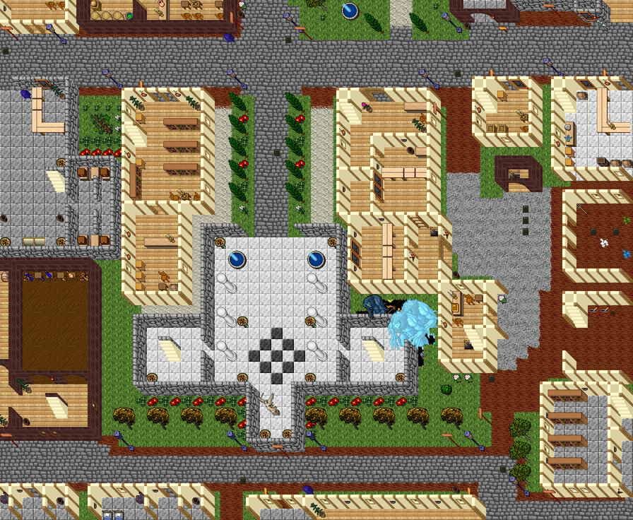
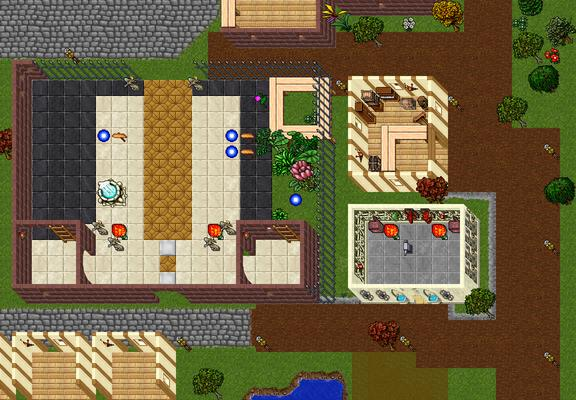
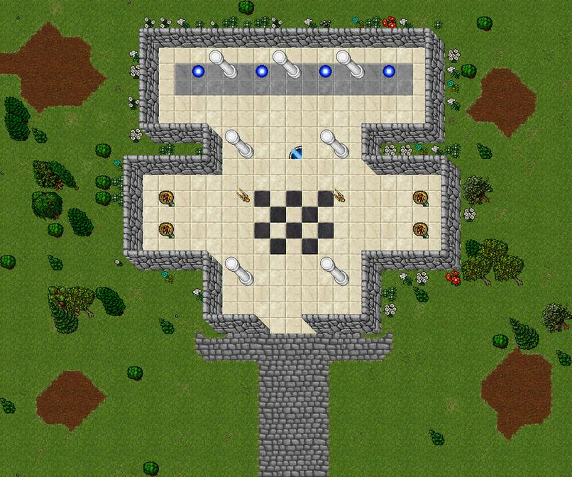
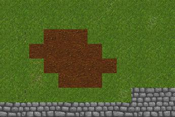
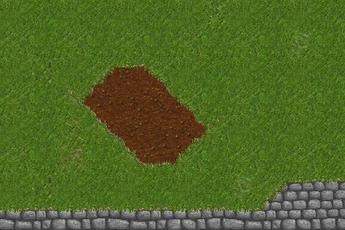
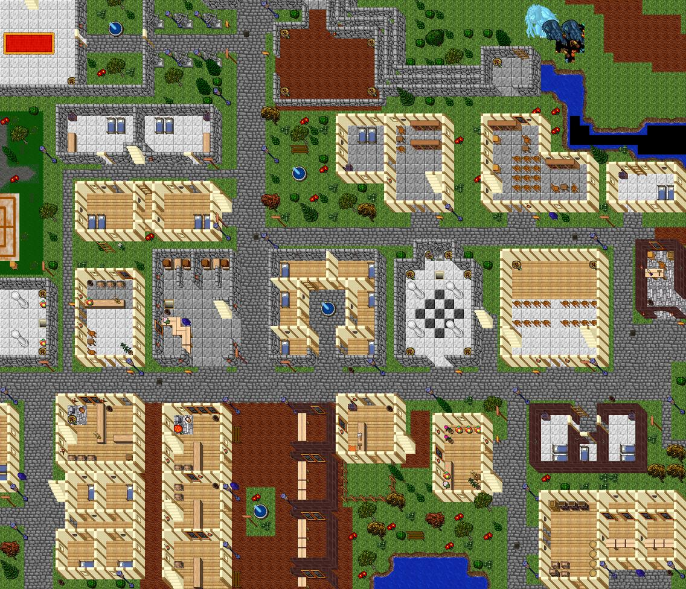
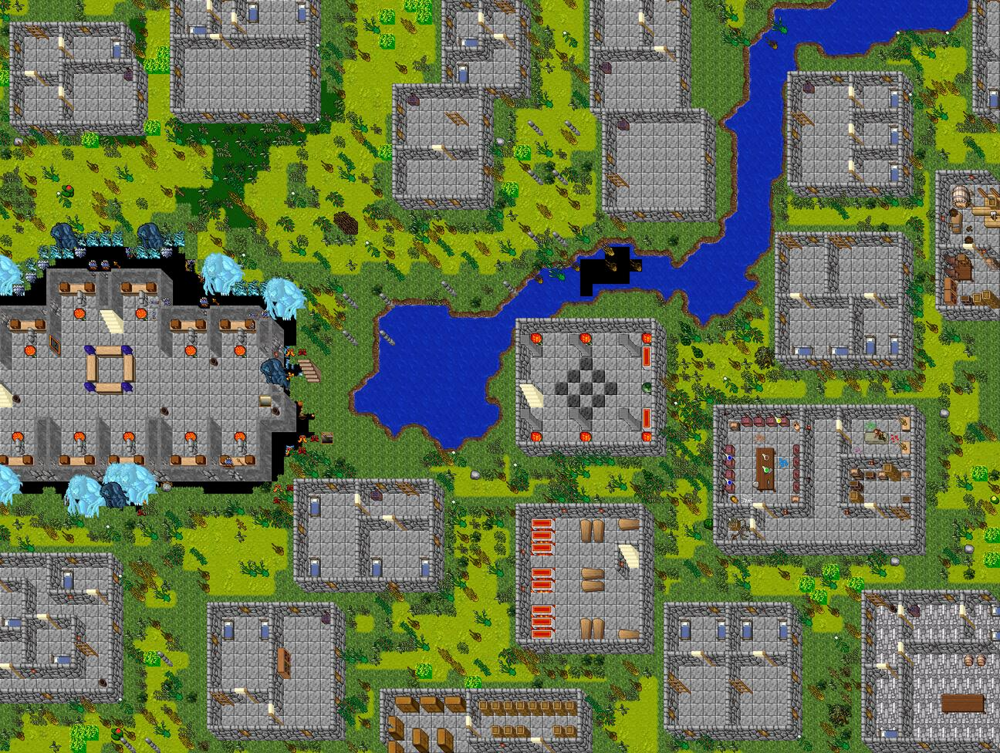
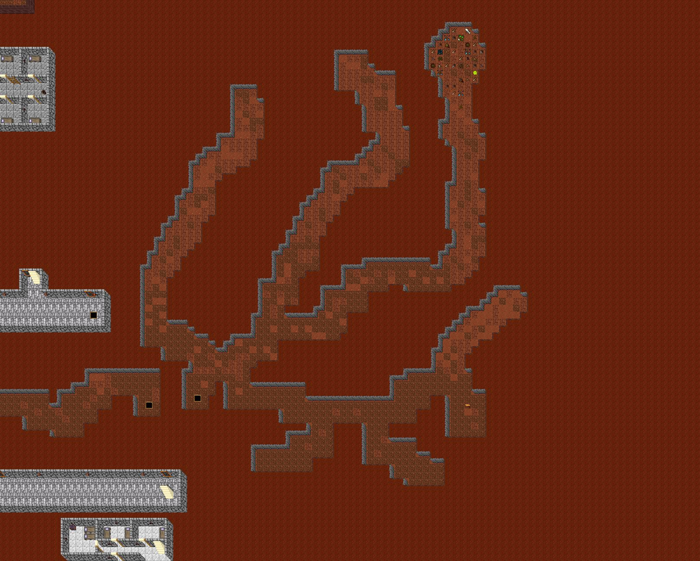
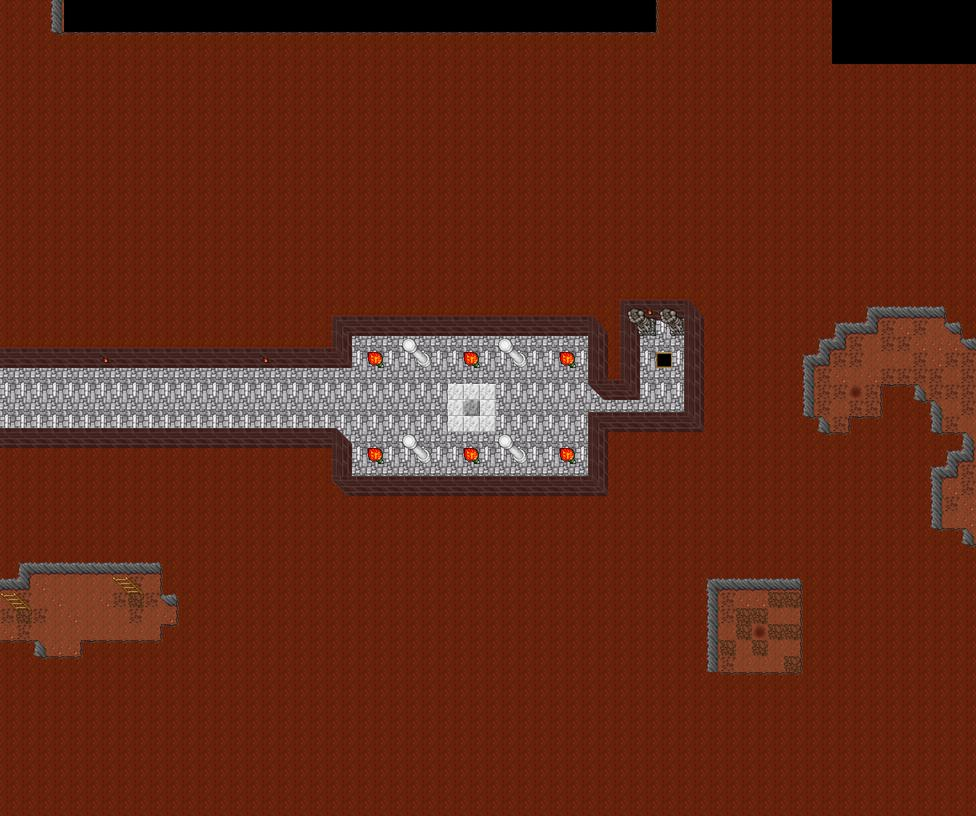

Referência: o mapa real do Tibia 7.7 (projeto Nostalrius) e o mapa 7.6 que veio com o YurOTS, renderizados aqui com as sprites do seu cliente. As regras abaixo são o que eu vou seguir daqui para frente em todo mapa do Vitalia, e cada entrega vai vir com uma imagem renderizada assim para você aprovar antes de instalar.
1. Templos

Thais (mapa real): templo em cruz, mármore branco, xadrez no centro, pilares em pares, jardim em volta.

Vitalia hoje: retângulo, mármore preto e branco sem desenho, paredes de madeira e pouca moldura externa.
Forma simétrica e reconhecível (cruz, nave com transepto ou planta octogonal). Templo é o único prédio da cidade que deve ser simétrico de propósito.
Piso de mármore branco como base e um desenho no centro (xadrez preto e branco, tapete, mosaico) marcando o ponto de chegada.
Paredes de pedra (stone wall), nunca de madeira. Madeira é para casas.
Pilares em pares ao longo da nave, coal basins / lamps nas paredes a cada 4–6 sqm e uma fonte ou altar como foco.
Entrada larga (3 sqm) voltada para a rua principal, com calçamento chegando até a porta.
Moldura externa: canteiros de flores (moon flowers, heaven blossom) encostados nas paredes, árvores alinhadas (yellow maple, poplar), grama com borda limpa até a rua.
1b. Templos com teleports (servidores monetizados)
Em servidores com hunts por teleport, o templo vira o centro do jogo: é onde o jogador nasce, volta e escolhe para onde ir. O que os mapeadores experientes elogiam e criticam nesses templos, nas revisões do OTLand:
Pequeno e compacto. A crítica mais comum é templo grande demais e vazio. O salão principal tem 9–13 sqm de largura; o resto vira alas.
Sala de teleports separada da área de chegada, numa ala própria (atrás do altar ou num braço da cruz), toda em zona de proteção, para quem sai da hunt não cair em cima de quem está entrando.
Poucos teleports por sala (4 a 6) e em ritmo: teleport, pilar, teleport. Mais destinos = outra sala por faixa de level, não uma parede de portais.
Cada teleport tem moldura: piso de destaque embaixo (pedra cinza ou cor da faixa), pilar ou estátua do lado e o nome em texto animado. A estátua do monstro ou a cor do piso indica a dificuldade.
NPCs espaçados, cada um no seu balcão fixo (mesa que não se move), com pelo menos 1 sqm livre entre eles.
Depot fora do templo ou numa ala lateral, com lockers e boxes de 2 sqm de profundidade (ninguém empurra o outro para fora).
Não misturar pisos dentro do templo nem encher de bordas metálicas; um piso base e um desenho central bastam. Nada de pedras ou lixo sobre piso de mármore.
Portas e móveis certos: porta comum (não de casa), móveis fixos, lixeira e caixa de correio perto do depot.

Protótipo gerado com o motor de pincéis (abaixo): cruz compacta, ala norte de teleports em ritmo teleport–pilar, xadrez no centro, paredes de pedra conectadas como no mapa real, terra e calçamento com borda automática, flores encostadas nas paredes e árvores em grupos irregulares. É um estudo, ainda não está no seu mapa.
1c. O editor de mapas (Remere's Map Editor) e o que eu aproveitei dele
O RME que está na sua pasta guarda, em data/760, as regras que ele usa para "pintar" o mapa. Eu li esses arquivos e montei um motor que faz a mesma coisa nos mapas que eu gero:
Pisos com variação (grounds.xml): cada piso tem uma lista de variações com chance. A grama, por exemplo, usa 20 variações; é isso que tira o aspecto de "azulejo".
Bordas automáticas (borders.xml): cada piso tem prioridade (z-order) e um conjunto de 12 peças de borda (4 lados, 4 cantos de fora, 4 cantos de dentro). O piso de prioridade maior desenha a borda sobre o vizinho. Agora eu aplico isso em todo contorno.
Paredes que se conectam (walls.xml + mapa real): aprendi do mapa real qual peça vai em cada encaixe (reta, canto, T, cruz) para parede de pedra, tijolo, madeira e rocha. Também confirmei a regra do chão embaixo da parede: paredes do lado norte e oeste ficam sobre o chão de fora; as do sul e leste, sobre o piso de dentro.
Doodads (doodads.xml): 144 grupos prontos (árvores, flores, pedras, móveis, estátuas), que eu uso para decorar com variedade em vez de repetir o mesmo item.

Sem borda: terra e calçamento cortados em quadrados.

Com o motor de bordas: transições arredondadas, como no RME.
2. Cidades

Carlin: ruas de calçamento com bordas, casas de framework, grama com bordas e decoração alinhada às paredes.

Venore: cidade sobre a água, pontes e cais. O tema (pântano, madeira) aparece em todos os detalhes.
Ruas de 3 a 5 sqm de calçamento, com a rua principal mais larga ligando templo, depot e saídas.
Toda transição tem borda: grama ↔ terra, grama ↔ calçamento, terra ↔ água. Nunca deixar dois pisos crus encostando.
Variação de piso: alternar 2–3 variações do mesmo chão (ex.: três tipos de grama) para não ficar "azulejo".
Decoração com função: barris e caixas junto a lojas, mesas e cadeiras dentro de tavernas, bancos nas praças. Encostar nas paredes e deixar ~70% do interior livre.
Tema por bairro: cada cidade tem materiais próprios (Carlin = madeira clara e flores; Venore = madeira escura e água; Kazordoon = pedra e lava).
Paredes em perspectiva: o cliente mostra o lado norte e oeste; cantos com as peças certas (padrão do Vitalia: canto SE = 1053, cantos NW 1052/1054).
3. Cavernas e hunts

Mina de Kazordoon: túneis de 2–4 sqm que serpenteiam em diagonal, paredes de montanha só nas bordas.

Kazordoon: cidade dentro da montanha, salas largas ligadas por corredores.
Corredores de 2 a 4 sqm, tortos e em diagonal, abrindo em salões de 8–15 sqm onde ficam os spawns.
Parede de montanha (stone wall de chão + peças de borda) contornando todo o vazio; nunca túnel retangular perfeito.
Chão misturado: terra como base com manchas de muddy floor (10–15%) e pedra perto de construções.
Detalhes esparsos e temáticos: ossos e lixo em hunts de monstros, ferramentas e trilhos em minas, teias em cavernas de aranha. 1 detalhe a cada 6–10 sqm.
Luz: tochas nas entradas e nos salões; hunts profundas podem ser escuras de propósito.
Densidade: cerca de 1 monstro para cada 20–30 sqm livres, com corredores de respiro sem spawn e uma rota de saída clara.
4. Itens de referência (já convertidos para o seu servidor)